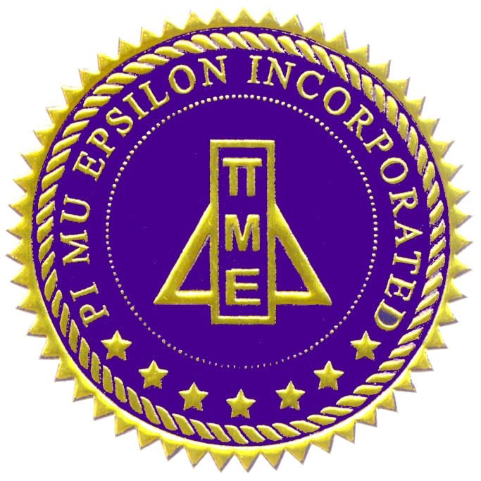

-
Education
-

Binghamton University, State University of New York
-
Overall GPA: 3.50/4.00
-
Watson School of Engineering and Applied Sciences
Bachelor of Science in Computer Science Expected May 2017
Major GPA: 3.32

Member of Upsilon Pi Epsilon honor society, Iota Chapter since December 2014
Treasurer since April 2015- Current Computer Science Courses (Fall 2015)
- Operating Systems (CS350)
- Automata Theory and Formal Languages (CS373)
- Completed Computer Science Courses
- Software Skills
- Design and Analysis of Algorithms (CS375)
- Data Structures and Algorithms (CS240)
- Programming With Objects (CS140)
- Computer Systems
- Computer Systems III: Advanced Computer Architecture (CS320)
- Computer Systems II: Architecture and Programming (CS220)
- Computer Systems I: Machine Organization (CS120)
- Other
- Ethical, Social, and Global Issues in Computing (CS301)
- Intro Topics in Computer Science (CS101)
- Software Skills
-
Harpur College of Arts and Sciences
Bachelor of Science in Mathematical Sciences Expected May 2017
Major GPA: 3.63
 Member of Pi Mu Epsilon honor society, Alpha Omicron Chapter since April 2015 - Current Mathematics Courses (Fall 2015)
- Topology I (MATH461)
- Completed Mathematics Courses
- Real Analysis I and II (MATH478, 479)
- Design and Analysis of Algorithms (CS375)
- Functions of Complex Variables (MATH375)
- Number Systems (MATH330)
- Calculus III (MATH323)
- Linear Algebra (MATH304)
- Minor in Music
- Ensembles
- Harpur Jazz Ensemble
- Vibraphone
- Piano
- Auxiliary Percussion
- Binghamton University Percussion Ensemble
- Vibraphone
- Marimba
- Xylophone
- Steel Drum
- Cowbell
- Bass Drum
- Pieces of Wood
- Plastic Buckets
- Harpur Jazz Ensemble
- Ensembles
-
-
The Bronx High School of Science
-
High School June 2013
GPA: 94.20/100.00
-
Positions Held
-
Treasurer of Latin Club, September 2011-June 2013
- Helped organize Latin Club sales at the club fair
- Managed finances in organizing two annual certamines, and competed in said certamines
- Organized fundraisers such as Latin Club t-shirt sales
-
Treasurer of Latin Club, September 2011-June 2013
-
Awards and Honors
- Samuel Greitzer Computer Science Research Award (2013)
- American Invitational Mathematics Examination (AIME) qualifier (2013)
- Maureen O'Donnell Oxford Classical Dictionary Award (2013)
- Four Gold Medals (2010-2013) from the National Latin Exam
- Excellence in the Study of Latin (2013)
-
-
The Juilliard School, Pre-College Division
Composition May 2013
- Senior Recital on April 27th, 2013
- Completed Courses
- Music Theory
- Theory IV (2009-10)
- Theory V (2010-11)
- 20th Century Harmony and Post-Tonal Analysis (2011-12)
- Musical Form and Analysis (2012-13)
- Ear Training
- Ear Training III (2009-10)
- Ear Training IV (2010-11)
- Ear Training V (2011-12)
- Other
- Private Composition Lessons (2009-13)
- Private Teacher: Dr. Manuel Sosa
- For examples of my compositions, see the Music page.
- Composers' Forum (2009-13)
- Counterpoint I (2009-10)
- Counterpoint II (2010-11)
- Music History Survey (2012-13)
- Private Composition Lessons (2009-13)
- Music Theory
-
-
Skills
-
Programming Languages
Proficient/Strong
Java 
C++ 
C
Familiar

C# 
Assembly - x86
- MIPS

HTML5 
CSS3 
JavaScript jQuery 
Python
-
Important Software

Emacs Git 
UNIX Terminal
-
Operating Systems

Mac OS X 
Windows 
Linux Ubuntu 
Debian
Other Skills

Latin (reading) 
Vibraphone (esp. jazz) 
Piano (esp. jazz) 
Electric Bass (esp. funk, R&B) 
Strong background in Music Theory Music Composition and Arranging Jazz Improvisation
-
-
Relevant Experiences
-
Binghamton University Information and Technology Services (ITS) (August 2014-present)
-
Resident Computer Consultant (ResCon)
- Provide technical support to students on campus, helping them resolve questions about device connectivity and software problems, among other issues.
- Develop technical skills along with the ability to communicate technical information to non-technically-minded people.
-
Resident Computer Consultant (ResCon)
-
Association of Computing Machinery (ACM) - Projects Division (spring 2015-present)
- Developing a website that will provide students with various services.
- Includes adding money to meal plans, viewing parking availability, map of campus, database of courses
- Developing a website that will provide students with various services.
Programming Competitions
- HackerRank World Cup - University Level CodeSprint (September 2015)
- Qualified for the semi-finals on a team of 3
- Solved question #2, Swapping Bridges, in about 30 minutes on my first try in C++
- Binghamton ACM September 2015 Programming Competition
- Placed 18th out of 107 students who participated
- HackerRank World Cup - University Level CodeSprint (September 2015)
-
New York State Psychiatric Institute at Columbia University Medical Center (NYSPI) (July-August 2015)
-
PsyIT Volunteer
- Wrote a Java program to automate the tedious manual cross-checking of Excel spreadsheets.
- Provide technical support to NYSPI staff and Columbia students, helping them resolve problems and set up new machines.
- Encrypt computers with BitLocker and FileVault.
-
PsyIT Volunteer
-
PennApps XI (January 2015)
-
Built, with a team, a website that uses bytewise subtraction to create faster updates between two files.
- Primarily contributed to front-end web development.
-
Built, with a team, a website that uses bytewise subtraction to create faster updates between two files.
-
-
Other Experiences
-
Upsilon Pi Epsilon honor society, Iota chapter (December 2014-present)
- Member and Peer Tutor since December 2014
- Treasurer since April 2015
-
Harpur Jazz Ensemble (August 2013-present)
- Play music with a big band in various styles such as swing, blues, soul, funk, etc.
- Arrange some music for the ensemble. See "music" page for some examples.
-
Binghamton University Percussion Ensemble (August 2013-present)
- Play percussion music in various styles with a small ensemble.
- Arrange some music for the ensemble.
-